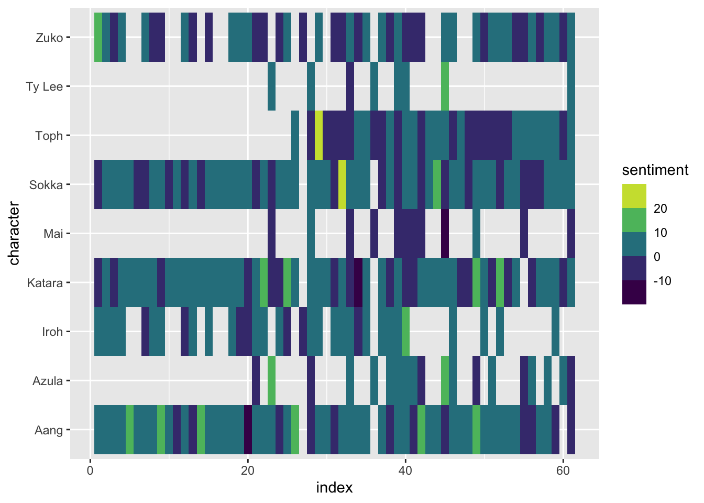

library(tidytuesdayR)Look at the available datasets
Loading the Data
#incoming data comes in as a list
datasets <- tidytuesdayR::tt_load("2020-08-11")--- Compiling #TidyTuesday Information for 2020-08-11 ------- There are 2 files available ------ Starting Download ---
Downloading file 1 of 2: `avatar.csv`
Downloading file 2 of 2: `scene_description.csv`--- Download complete ---#show the names of the individual datasets
names(datasets)[1] "avatar" "scene_description"avatar <- datasets$avatar
avatar[1:5,]# A tibble: 5 × 11
id book book_num chapter chapter_num character full_text character_words
<dbl> <chr> <dbl> <chr> <dbl> <chr> <chr> <chr>
1 1 Water 1 The Boy … 1 Katara "Water. … Water. Earth. …
2 2 Water 1 The Boy … 1 Scene De… "As the … <NA>
3 3 Water 1 The Boy … 1 Sokka "It's no… It's not getti…
4 4 Water 1 The Boy … 1 Scene De… "The sho… <NA>
5 5 Water 1 The Boy … 1 Katara "[Happil… Sokka, look!
# … with 3 more variables: writer <chr>, director <chr>, imdb_rating <dbl>scenes <- datasets$scene_description
scenes[1:5,]# A tibble: 5 × 2
id scene_description
<dbl> <chr>
1 3 [Close-up of the boy as he grins confidently over his shoulder in the d…
2 5 [Happily surprised.]
3 6 [Close-up of Sokka; whispering.]
4 6 [A look of bliss adorns his face. He licks his lips and wiggles his fin…
5 8 [Struggling with the water that passes right in front of her.] My Research Question
Does the sentiment of each character change over the multiple seasons? That is, does a character become more positive or more negative as their character develops?
I will attempt to summarize the sentiment of each character across each episode.
Using tidytext to unnest_tokens() - that is, split each line into 1 word per row.
library(tidytext)
library(tidyverse)── Attaching packages ─────────────────────────────────────── tidyverse 1.3.1 ──✓ ggplot2 3.3.6 ✓ purrr 0.3.4
✓ tibble 3.1.6 ✓ dplyr 1.0.7
✓ tidyr 1.1.3 ✓ stringr 1.4.0
✓ readr 2.0.1 ✓ forcats 0.5.1── Conflicts ────────────────────────────────────────── tidyverse_conflicts() ──
x dplyr::filter() masks stats::filter()
x dplyr::lag() masks stats::lag()avatar_words <- avatar %>%
select(id, book, book_num, chapter, chapter_num, character, character_words) %>%
filter(character != "Scene Description") %>%
unnest_tokens(word, character_words)
avatar_words[1:10,]# A tibble: 10 × 7
id book book_num chapter chapter_num character word
<dbl> <chr> <dbl> <chr> <dbl> <chr> <chr>
1 1 Water 1 The Boy in the Iceberg 1 Katara water
2 1 Water 1 The Boy in the Iceberg 1 Katara earth
3 1 Water 1 The Boy in the Iceberg 1 Katara fire
4 1 Water 1 The Boy in the Iceberg 1 Katara air
5 1 Water 1 The Boy in the Iceberg 1 Katara my
6 1 Water 1 The Boy in the Iceberg 1 Katara grandmother
7 1 Water 1 The Boy in the Iceberg 1 Katara used
8 1 Water 1 The Boy in the Iceberg 1 Katara to
9 1 Water 1 The Boy in the Iceberg 1 Katara tell
10 1 Water 1 The Boy in the Iceberg 1 Katara me Characters by Episode/Chapter
episode_count <- avatar %>%
count(character, chapter) %>%
select(character, chapter) %>%
filter(character != "Scene Description") %>%
distinct() %>%
count(character) %>%
arrange(desc(n))
episode_count %>%
DT::datatable()Bit Players
episode_count %>%
filter(n == 1) %>%
arrange(character)# A tibble: 272 × 2
character n
<chr> <int>
1 Aang and Zuko 1
2 Aang: 1
3 Actor Bumi 1
4 Actor Iroh 1
5 Actor Jet 1
6 Actor Ozai 1
7 Actor Sokka 1
8 Actor Toph 1
9 Actor Zuko 1
10 Actress Azula 1
# … with 262 more rowsCabbage merchant
The cabbage merchant appears in 4 episodes, and you can see his path to resignation as Aang and company keep busting up his cabbage kiosk.
avatar %>%
filter(character == "Cabbage merchant") %>%
select(chapter, character_words) %>%
gt::gt()| chapter | character_words |
|---|---|
| The King of Omashu | No! My cabbages! |
| The King of Omashu | My cabbages! You're gonna pay for this! |
| The King of Omashu | Off with their heads! One for each head of cabbage! |
| The King of Omashu | My cabbages! |
| The Waterbending Scroll | My cabbages! This place is worse than Omashu! |
| The Serpent's Pass | Ahhh! My cabbages! |
| The Tales of Ba Sing Se | My cabba- Oh, forget it. |
Who Spoke the Most?
Surprisingly, Sokka has the most lines.
line_count <- avatar_words %>%
count(character) %>%
arrange(desc(n))
line_count[1:20,] %>%
gt::gt()| character | n |
|---|---|
| Sokka | 18293 |
| Aang | 17821 |
| Katara | 14961 |
| Zuko | 8972 |
| Toph | 5434 |
| Iroh | 5252 |
| Azula | 3299 |
| Zhao | 1607 |
| Jet | 1604 |
| Suki | 1221 |
| Hakoda | 1065 |
| Pathik | 1030 |
| Roku | 1015 |
| Ozai | 1002 |
| Hama | 955 |
| Mai | 844 |
| Bumi | 818 |
| Long Feng | 757 |
| Warden | 722 |
| Ty Lee | 705 |
Understanding Each Character’s Journey
Using tidytext, I do a sentiment analysis of each episode (here called a chapter) to determine the overal sentiment for a character.
bing <- get_sentiments("bing")
characters <- c("Aang", "Katara", "Zuko", "Toph", "Iroh", "Sokka", "Azula", "Mai", "Ty Lee")
sentiment_summary <- avatar_words %>%
inner_join(bing) %>%
count(book_num, chapter_num, chapter, character, sentiment) %>%
filter(character %in% characters) %>%
arrange(book_num, chapter_num) %>%
pivot_wider(names_from = sentiment, values_from = n) %>%
mutate(positive = tidyr::replace_na(positive, 0),
negative = tidyr::replace_na(negative, 0)) %>%
mutate(sentiment = positive - negative)Joining, by = "word"index_chapters <- avatar_words %>%
select(book_num, chapter_num) %>%
distinct() %>%
mutate(index = row_number())sentiment_index <- sentiment_summary %>%
inner_join(y= index_chapters, by=c("book_num", "chapter_num"))out_plot <- ggplot(sentiment_index) +
aes(x=index, y=sentiment, fill=character, episode=chapter, book = book_num, episode_number=chapter_num) +
geom_col(show_legend = FALSE) +
facet_wrap(~character, ncol=2) +
labs(title= "Each Character's Sentiment Journey", x="Episode Number",
subtitle = "mouse over each graph for more information") +
geom_vline(xintercept = 21, lty=2) +
geom_vline(xintercept = 41, lty=2)Warning: Ignoring unknown parameters: show_legendplotly::ggplotly(out_plot)Sentiment Heatmap
s_index <- sentiment_index %>%
tidyr::complete(chapter_num, character)
ggplot(s_index) +
aes(x=index, y=character, fill=sentiment) +
geom_tile() +
scale_fill_viridis_b(na.value="black") Warning: Removed 30 rows containing missing values (geom_tile).
Zuko has the most interesting journey
Zuko has many ups and downs, which may reflect his overall lack of confidence and his tendency for self-loathing.
zuko <- sentiment_index %>%
filter(character=="Zuko")
out_plot <- ggplot(zuko) +
aes(x=index, y=sentiment, fill=character, episode=chapter, book = book_num, group=character, episode_number=chapter_num) +
geom_col(show_legend = FALSE) +
facet_wrap(~character, ncol=2) +
annotate(geom="text", x=27, y= -8 , label = "Zuko Alone\nA Turning Point") +
annotate(geom="text", x=53, y = 11, label = "Where Zuko\ntrains Aang") +
labs(title= "Zuko has lots of ups and downs", x="Episode Number",
subtitle = "mouse over for more episode information") +
ylim(c(-13, 13)) +
geom_vline(xintercept = 21, lty=2) +
geom_vline(xintercept = 41, lty=2)Warning: Ignoring unknown parameters: show_legendplotly::ggplotly(out_plot)Aang and Zuko’s Journeys
Plotting the sentiment journey of Zuko and Aang together shows that they often mirror each other, except in the last parts of Book 3.
zuko_aang <- sentiment_index %>%
filter(character %in% c("Zuko", "Aang"))
out_plot <- ggplot(zuko_aang) +
aes(x=index, y=sentiment, fill=character, episode=chapter, book = book_num, episode_number=chapter_num) +
geom_col(show_legend = FALSE, alpha=0.7) +
labs(title= "Aang and Zuko's Journeys Often Mirror Each Other",
x="Episode Number",
subtitle = "mouse over for more episode information") +
ylim(c(-13, 13)) +
geom_vline(xintercept = 21, lty=2) +
geom_vline(xintercept = 41, lty=2)Warning: Ignoring unknown parameters: show_legendplotly::ggplotly(out_plot)Warning: Removed 4 rows containing missing values (position_stack).Iroh is so chill and positive
iroh <- sentiment_index %>%
filter(character=="Iroh")
out_plot <- ggplot(iroh) +
aes(x=index, y=sentiment, fill=character, episode=chapter, book = book_num, episode_number=chapter_num) +
geom_col(show_legend = FALSE) +
labs(title= "Iroh is just so chill and positive", x="Episode Number",
subtitle = "mouse over for more episode information") +
ylim(c(-13, 13)) +
geom_vline(xintercept = 21, lty=2) +
geom_vline(xintercept = 41, lty=2)Warning: Ignoring unknown parameters: show_legendplotly::ggplotly(out_plot)Citation
BibTeX citation:
@online{laderas2020,
author = {Ted Laderas and Ted Laderas},
title = {Sentiment Analysis of {Avatar}},
date = {2020-08-11},
langid = {en}
}
For attribution, please cite this work as:
Ted Laderas, and Ted Laderas. 2020. “Sentiment Analysis of
Avatar.” August 11, 2020.